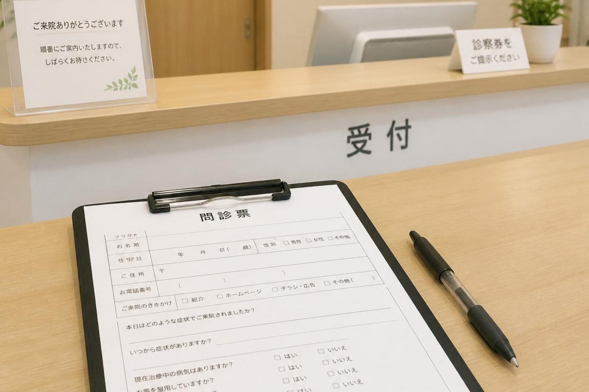

何科に行けばよいかわからないときは、どうすればよいですか？
A. 回答迷われたときは、まず内科にご相談いただくのが確実です。症状から病気を絞るのは本来こちら側の仕事で、患者さんが正しい科を当ててから来る必要はありません。当院は内科・呼吸器内科・循環器内科・感染症内科・アレルギー科・消化器内科（胃腸科）・小児科・リハビリテーション科の8つの科目を標榜しています。多くの症状はここで見当をつけられますし、専門的な治療が必要な場合は適切な医療機関へおつなぎします。

症状からの目安
あくまで目安です。当てはまらなくても、迷ったらご相談ください。
| 症状 | まず考える科 | 当院で |
|---|---|---|
| 咳が続く、息切れ、いびき、痰 | 呼吸器内科 | 対応しています |
| 胸の痛み、動悸、むくみ、血圧 | 循環器内科 | 対応しています |
| 胃の痛み、胸やけ、便通の異常、血便 | 消化器内科 | 対応しています |
| 発熱、のどの痛み、感染症 | 感染症内科・内科 | 対応しています |
| 鼻水、くしゃみ、じんましん、食物のアレルギー | アレルギー科 | 対応しています |
| だるさ、体重の変化、健診の異常 | 内科 | 対応しています |
| 腰や膝の痛み、転びやすい | リハビリテーション科・整形外科 | 対応しています（手術が要る場合はご紹介） |
| お子さんの発熱・発疹、予防接種 | 小児科 | 対応しています |
| 皮膚の湿疹、ほくろ、水虫 | 皮膚科 | ご紹介します |
| 目の症状 | 眼科 | ご紹介します |
| 耳の症状、めまいで耳鳴りをともなう | 耳鼻咽喉科 | ご紹介します |
| 骨折、けが | 整形外科・外科 | ご紹介します |
| 気分の落ち込みが続く | 心療内科・精神科 | まずご相談ください |
どの科かわかりにくい症状
次のような症状は、原因になりうる病気が複数の科にまたがります。こうしたものこそ、まず内科で全体を見るのが向いています。
| 症状 | 考えられる背景の例 |
|---|---|
| だるさが続く | 貧血、甲状腺、腎臓、肝臓、糖尿病、睡眠時無呼吸、うつ など |
| めまい | 耳、血圧、貧血、脱水、不整脈、薬の影響 など |
| むくみ | 心臓、腎臓、肝臓、甲状腺、静脈、薬の影響 など |
| 体重が減る | 糖尿病、甲状腺、消化器の病気、感染症 など |
| 手足のしびれ | 首や腰、糖尿病、ビタミン不足、血流 など |
| 息切れ | 心臓、肺、貧血、体力の低下 など |
これらは、血液検査・心電図・レントゲンといった基本的な検査で背景の見当がつくことが多く、当院でひととおり行えます。
迷わず救急車を呼ぶ場合
科を考えている時間が惜しい症状
- 意識がない、呼びかけへの反応がおかしい
- 締めつけられるような胸の痛みが続く、冷や汗をともなう
- 片側の手足が動かない、顔がゆがむ、ろれつが回らない
- 呼吸が苦しくて言葉が続かない
- けいれんが止まらない
- 吐いたものに血が混じる、真っ黒な便で顔色が悪い
これらは119番です。判断に迷う場合は、♯7119（おかやま医療情報ネット）、お子さんは♯8000でも相談できます。
「たらい回し」を避けるために
複数の科を回ることになる背景には、症状が一つの科に収まらないことがあります。当院ではまず全体を見て、必要な検査で絞り込み、そのうえでどこへ行けばよいかをご案内するという形をとっています。ご自身で当てていただく必要はありません。
また当院はかかりつけ医として、他の医療機関での受診状況や処方されている薬を把握したうえで対応しています。すでに別の病院にかかっている場合も、お薬手帳をお持ちのうえご相談ください。
介護のことも、同じ窓口で
当法人は医院に加えて、訪問診療・訪問看護・デイサービス・訪問介護・小規模多機能ホーム・居宅介護支援・サービス付高齢者向け住宅を運営しています。「通院が難しくなってきた」「介護保険を使ったほうがよいか」といったご相談も、医療の窓口からそのままつなげます。
医療と介護で相談先が分かれてしまい、同じ話を何度も説明することになる——という負担を減らせるのが、当法人の形の利点です。
受診のときに伝えていただきたいこと
- いつからの症状か
- どんなときに強くなるか、弱くなるか
- ほかに気になっていることがあれば、あわせて（関係なさそうでもかまいません）
- 他の医療機関で飲んでいる薬（お薬手帳）
- これまでにかかった大きな病気
「これは関係ないと思うのですが」と前置きされたことが手がかりになる場面は少なくありません。遠慮なくお話しください。
どの科かわからない、という状態のままご相談いただけます。
最終更新：2026年8月27日